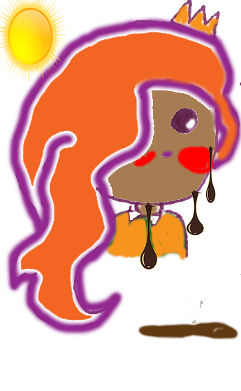

It was the season dreaded by all in Cocoa Land. The mere mention of this particular season would transform a happy, smiling, jovial face into the face of someone who just smelt the farts of a thousand brussell sprout loving, cabbage juice drinking, burly, sweaty men. It was the scariest, deadliest, downright helliest of all the seasons that ever existed EVER!!!! You see my little friends, summer was upon us, The only thing scarier than summer for a Cocoanian was the thoughts of another milk drought, but that is another story altogether.
Yes, summer may strike you as the time for laughter, joy, holidays, skipping and hopping, flipping and bopping, but NO!!!! You are most definitely wrong there, my little friends. Let me stop your sizzling, summer thoughts in their tracks. Summer in Cocoa Land was, in fact, a time for panic and hysteria. All citizens of this glorious land had to be alert and diligent. They needed to prepare themselves as a bear would prepare himself for hibernation, as a soldier would prepare herself for war.
Was all the clothing appropriately fitted with cooling compartments?? Did everyone have enough anti-melting lotion?? Anti-melting lotion, just in case you are wondering, was sold by the truck load as every part of a Cocoanian body needed to be lathered in this lotion from head to toe. Each crevice between their toes had to be smothered in the lotion, each Cocoanian belly button had to be filled, even the insides of their chocolatey butt cheeks were included in the anti-melting ritual. No part of the body was left unlotioned and if it was, well...............the consequences were detrimental, or should I say detriMELTal!!
As you can imagine, summer in Cocoa Land without these necessary precautions meant all who lived there would melt into a brown, bubbling, babbling brook of chocolatey gooiness. Sounds good to you, I am sure, but for all the citizens in Cocoa Land it was a complete and utter nightmare, an achocolypse, if you will!!
Princess Cocoa despised the summer because it caused such a stir and a fuss. Such stiriness and fussiness should only occur around her birthdays, her first day back at school days, her first smelly farts days, her first 8 inch poo days and any day really where anything remotely interesting happens to her. She also hated the summer because she was never allowed step outside the front door without a heavy dose of anti melting lotion and without wearing the ugly summer attire. She detested summer clothing as it was always so silvery. Princess Cocoa, who was after all a princess, only liked to wear the goldiest and glitteriest of clothing
So, Princess Cocoa decided that this particular summer would be different. She would not be told what to wear and what times she was permitted to leave the palace. Princess Cocoa was going to stand up to summer, she was going to stare summer in the ugly, orange face and stick her royal tongue out at it.
And so, on one scorching summer's day, at exactly 11am (the exact hourwhen the sun was at its hottest and everyone else in Cocoa Land was hidden away behind closed doors and fastened shutters). Princess Cocoa was about to embark on her summer mission. She was armoured in her finest and goldest dress, topped off with her royal ruby crown and a pair of delicate, golden ballerina pomps on her royal feet. She stubbornly chose not to apply the anti-melting lotion. She avoided any palace staff on her way to the front door, which was not many as most people were taking a siesta from the baking heat,
When she reached the front door, there was a woollen hat covering the door knob. This was to prevent anyone from scolding themselves on the brass metal She recalled her mother saying that one summer, back when her mother was a child, the palace butler touched the bare door handle and lost his hand in the process. He was nicknamed 'Stubby Mc Stubberson' from that day forth.
Princess Cocoa pulled and tugged with all her princess might at the door knob until, eventually, the door creaked open. She was immediately knocked on her chocolatey bum as a whoosh of heat rushed through the door and into the palace hall. The princess did not let this little stumble deter her.
She got up angrily, shook her fist at mother nature and proceeded to take her first step out onto the garden path. As she laid her dainty right foot onto the ground, she felt an unusual sensation. It felt like her foot was steeped in hot hot water. She looked down and to her shock and astonishment, her right pomp was was filling with melting chocolate. Her foot was melting right before her eyes. She stumbled backwards into the palace hallway and out of the heat of the sun. Her partially melted foot gave her such a fright that she screamed and bellowed until all the windwindows and doors shook.
The shuddering of the palace and the ear popping screams reached her dog, Beanie, first. He came sprinting to the resue. He came upon the melted foot and assumed that this was a shoe filled treat for him, a reward for his bravery. He proceeded to lick the chocolate and gobble it up. Princess Cocoa looked on in horror as her dog ate her royal foot. HER VERY OWN DOG!!!
I think a valuable lesson has been learned here!!! Can you gues what this lesson is??
Even dogs made of chocolate cannot resist a shoe full of melted chocolate because......... ALL DOGS LOVE CHOCOLATE!!